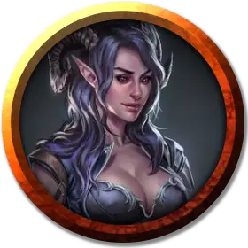

Линкс Креатлах
Lynx Creatlach
Средняя Нежить (Тифлинг), законно-злая, именной НИП

Класс Доспеха 13 (кожаный доспех)
Хиты 136 (16к8 + 64)
Скорость 30 футов
| мод | спас | ||
|---|---|---|---|
| СИЛ | 18 | +4 | +7 |
| ЛОВ | 14 | +2 | +2 |
| ТЕЛ | 18 | +4 | +7 |
| мод | спас | ||
|---|---|---|---|
| ИНТ | 13 | +1 | +1 |
| МДР | 16 | +3 | +6 |
| ХАР | 18 | +4 | +7 |
Сопротивление урону некротическая энергия, психическая энергия
Иммунитет к урону яд
Иммунитет к состояниям испуг, истощение, отравление, очарование, ошеломление, паралич
Чувства тёмное зрение 60 футов, пассивное Восприятие 13
Языки Общий, Инфернальный
Опасность 5 (1800 опыта)
Бонус мастерства +3
Особенности
Специальное снаряжение. Хрустальный глаз Линкс — это магически уменьшенный хрустальный шар истинного зрения [crystal ball]. Один из её зубов представляет собой переделанное кольцо защиты разума [ring of mind shielding], в то время как другой был заколдован, чтобы поместить ее под действие заклинания Нистулова ложная магия [Nystul's magic aura], скрывающего магию этих предметов и скрывающего её истинную природу от магии или особенностей, которые могут обнаруживать нежить.
Отвращение к огню. Если Линкс получает урон огнём, она совершает с помехой броски атаки и проверки характеристик до конца своего следующего хода.
Неизменяемая форма. Линкс невосприимчива к любому заклинанию или эффекту, который может изменить её форму.
Поглощение электричества. Всякий раз, когда Линкс получает урон электричеством, она не получает урона, а вместо этого восстанавливает количество хитов, равное нанесённому урону электричеством.
Сопротивление магии. Линкс совершает с преимуществом спасброски от заклинаний и других магических эффектов.
Регенерация. Линкс восстанавливает 10 хитов в начале своего хода. Если она получает урон огнём или излучением, эта особенность не действует в начале её следующего хода. Тело Линкс уничтожается, только если она начинает свой ход с 0 хитов и не регенерирует.
Иммунитет к изгнанию. Линкс невосприимчива к эффектам, изгоняющим нежить.
Действия
Мультиатака. Линкс совершает две атаки коротким мечом.
Короткий меч. Рукопашная атака оружием: +7 к попаданию, досягаемость 5 футов, одна цель. Попадание: 7 (1к6 + 4) колющего урона.